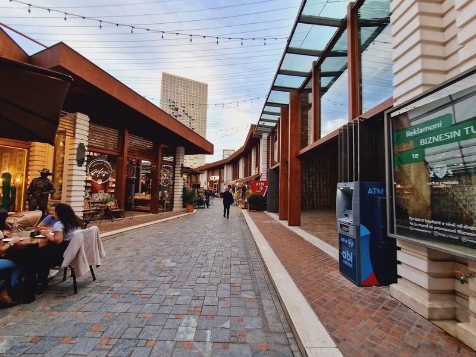
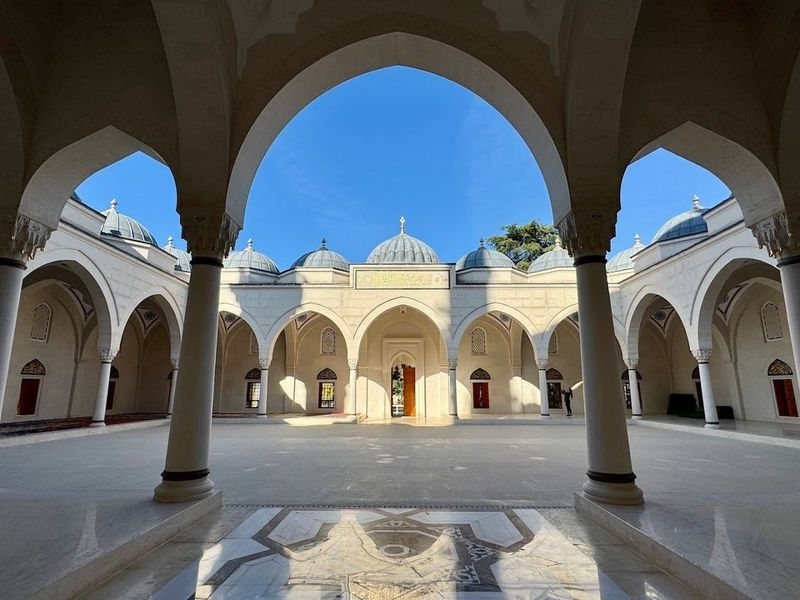
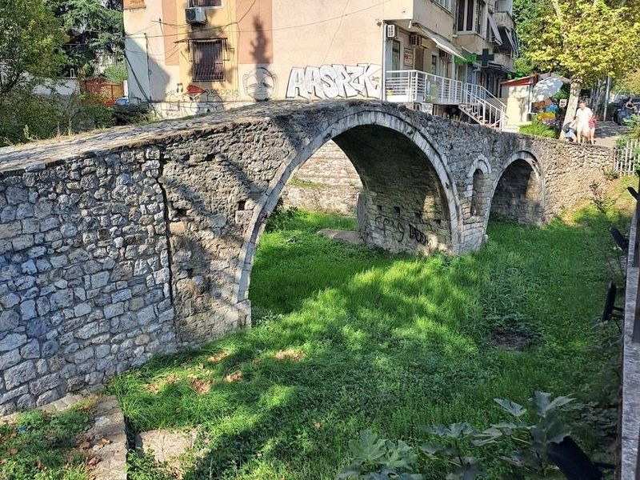
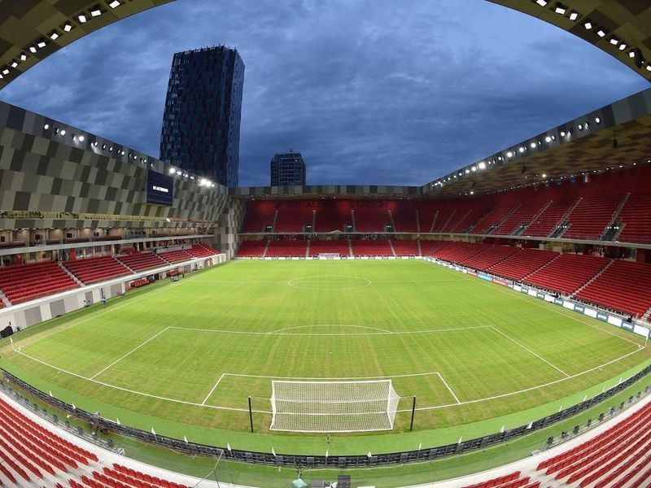
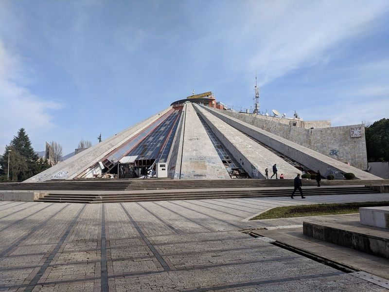
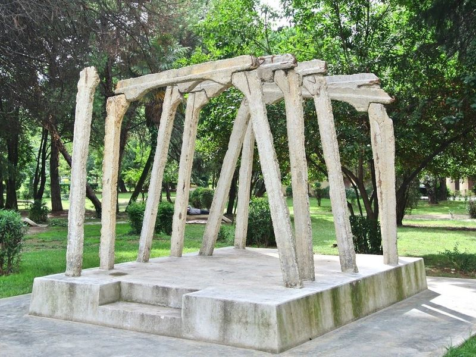
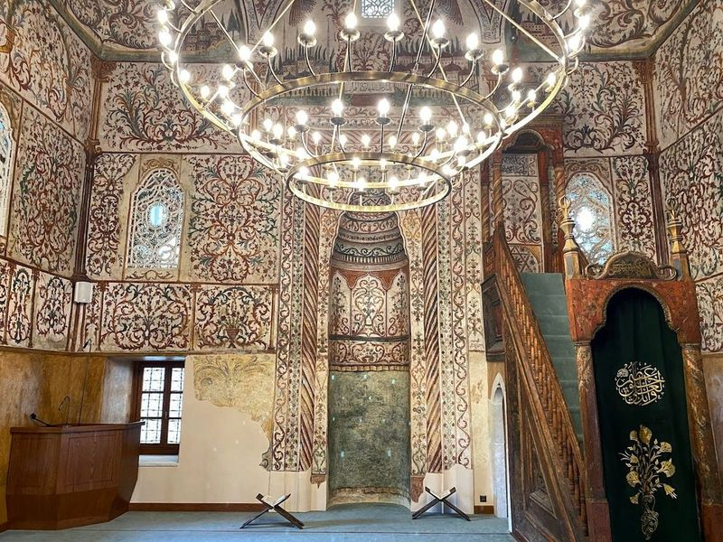
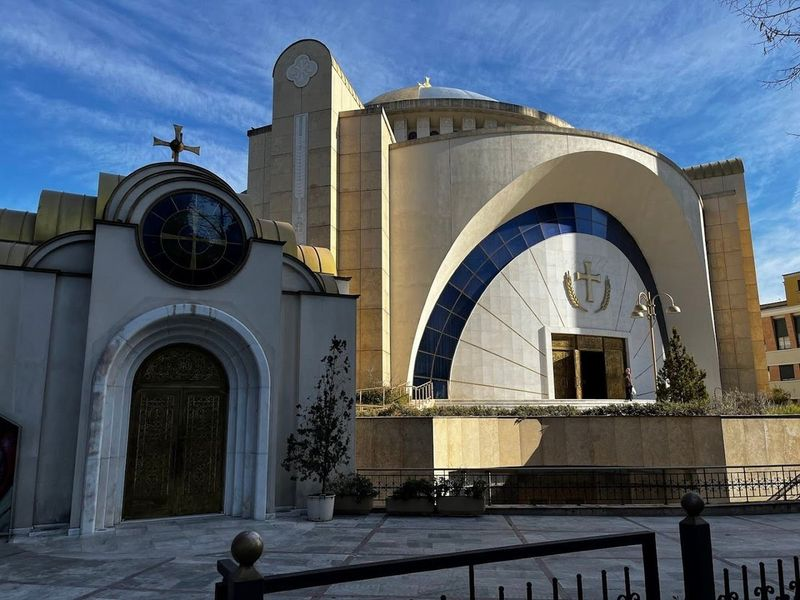
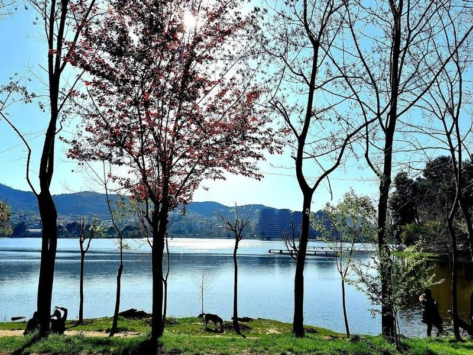

Explore Tiranë
A Brief History
Tirana became Albania's capital in 1920 after Ottoman rule and a brief period of independence following the First Balkan War. Italianate boulevards, communist-era housing blocks, and post-1990 painted façades record monarchy, Enver Hoxha's isolationist regime, and democratic reforms. Skanderbeg Square anchors ministries, museums, and mosques built across the 20th century.
Attractions Map
Top Sights & Activities

Tirana Castle
Tirana Castle, located in the historic center of Tirana, is a medieval fortress with an Ottoman-era wall that now houses handicraft stores, eateries, art galleries, and a hotel. The castle represents a field fortification with a rectangular plan and is thought to belong to the fortifications built by Emperor Justinian in the 4th-6th century.

Mosque of Namazgah
Namazgah Mosque, also known as the Great Mosque of Tirana, is a remarkable architectural marvel that stands as the largest mosque in the Balkans. Its construction was initiated after the end of communism to provide a central place for Muslims to gather and pray. The mosque's design seamlessly blends traditional Ottoman elements with intricate details, showcasing meticulous craftsmanship and dedication to preserving Islamic architecture.

Tanners' Bridge
Tanners' Bridge is a restored 18th-century stone bridge in Tirana, offering a glimpse into the city's Ottoman history. Originally part of the Saint George Road connecting Tirana with the eastern highlands, it served as the main route for farmers bringing their livestock to the butchery and leatherworking district.

Arena Kombëtare
The Air Albania Stadium, also known as Arena Kombetare, is the largest stadium in Albania, boasting a seating capacity of approximately 22,500 spectators. Completed in 2019, this state-of-the-art facility serves as the home ground for the Albanian national football team and has the flexibility to host various sports events. Nestled within Tirana's vibrant cityscape, it stands out with its modern architecture and top-notch amenities.

Pyramid of Tirana
The Pyramid of Tirana, originally known as the Enver Hoxha Museum, is a distinctive pyramidal structure in the city. It was built in 1988 to honor Enver Hoxha, the former leader of Communist Albania. Designed by Hoxha's daughter and her husband, it was intended to be a museum showcasing his legacy. However, after his death, it was repurposed as a conference center.

Postbllok
Nestled just off the main road in Tirana, Postbllok is a poignant little park that serves as a somber reminder of Albania's tumultuous past under Enver Hoxha's regime. This hidden gem features several significant structures, including one of the few remaining bunkers that once guarded Hoxha’s residence. The Memorial to Communist Isolation stands as a tribute to the political prisoners who endured suffering during this dark chapter in history.

Et'hem Bej Mosque
In the heart of the city center, find the Et'hem Bej Mosque, an 18th-century historical place of worship that stands out for its colorful frescoes. This mosque is a significant site in Albania's history as it miraculously survived destruction during the communist era due to its intricate nature motifs and murals, which were valued for their cultural and artistic significance.

Orthodox Cathedral of Resurrection
The Resurrection of Christ Orthodox Cathedral, completed in 2012, is a prominent landmark in Tirana. It stands out with its modern marble facade and a 46-meter bell tower that adds to its unique appearance. The cathedral complex includes the main cathedral, residence of the Holy Synod, Chapel of the Nativity, cultural center, small chapel, and library.

Zipline Albania
The site forms part of Zipline Albania's documented civic and cultural landscape within Tiranë, with archives and visitor information available from municipal or regional heritage authorities. The site forms part of Zipline Albania's documented civic and cultural landscape within Tiranë, with archives and visitor information available from municipal or regional heritage authorities.

Tirana Lake Park
Tirana Park, also known as the Grand Park of Tirana, is a vast and tranquil public space in the heart of Albania's bustling capital. This expansive green oasis features a botanical garden, zoo, the Presidential Palace, a church, and a serene lake. It offers recreational facilities, walking paths, and shaded areas for relaxation. The park is popular for picnics and outdoor activities while also serving as a vibrant hub for cultural events.